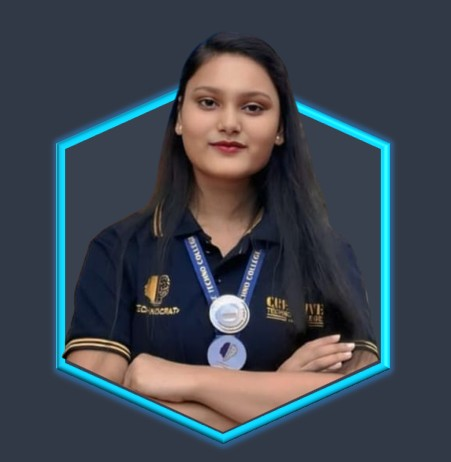

Main BSc CS ke teesre (Third) semester mein hun, aur meri primary interest Cyber Security mein hai. College khatm hone ke baad, mera goal hai ₹30,000+ salary wali technical job paana. ... Maine abhi apna doosra (Second) semester exams khatm kiya hai. Ab main internships aur certifications par focus kar raha hoon. Main jald hi Angul ya Anukul Karva De mein ek acchi low-profile job ki talash mein rahunga. Is portfolio mein aap mere projects aur skills dekh sakte hain. Mera long-term goal government job ki taiyari bhi hai.
Read More